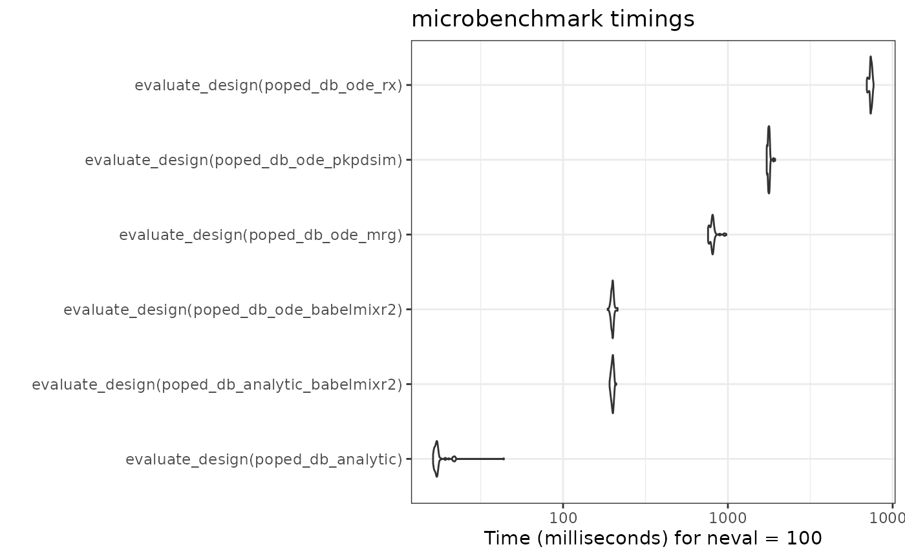

Introduction – using babelmixr2 with PopED
babelmixr2 now introduces a new method that takes
rxode2/nlmixr2 models converts them to a
PopED database to help with optimal design.
As in the PopED vignette comparing ODE solvers (and their speeds), this section will:
take the model described and adapt it in two different
rxode2model functions, the solved and ode cases (this is done by thenlmixr()call which creates aPopEDdatabase)compare these examples to the pharmacometric solvers in the PopED vignette (
mrgsolve, originalrxode2andPKPDsim)
babelmixr2 ODE solution
The first step of a design using babelmixr2 is to tell babelmixr2
about the design being optimized. This is a bit different than what is
done in PopED directly. Below I am using the
et() function to create the event table like a typical
rxode2 simulation, but it is used to specify the study
design:
library(babelmixr2)
library(PopED)
e <- et(amt=1, ii=24, until=250) %>%
et(list(c(0, 10),
c(0, 10),
c(0, 10),
c(240, 248),
c(240, 248))) %>%
dplyr::mutate(time =c(0, 1,2,8,240,245))
print(e)
#> ── EventTable with 6 records ──
#> 1 dosing records (see $get.dosing(); add with add.dosing or et)
#> 5 observation times (see $get.sampling(); add with add.sampling or et)
#> multiple doses in `addl` columns, expand with $expand(); or etExpand()
#> ── First part of : ──
#> # A tibble: 6 × 7
#> low time high amt ii addl evid
#> <dbl> <dbl> <dbl> <dbl> <dbl> <int> <evid>
#> 1 NA 0 NA 1 24 10 1:Dose (Add)
#> 2 0 1 10 NA NA NA 0:Observation
#> 3 0 2 10 NA NA NA 0:Observation
#> 4 0 8 10 NA NA NA 0:Observation
#> 5 240 240 248 NA NA NA 0:Observation
#> 6 240 245 248 NA NA NA 0:ObservationPopED/babelmixr2 event table description
Here note that time is the design times for the
PopED designs, they can include dosing; only observations
are considered the time-points. They become the xt
parameter in the PopED database (excluding the doses).
We also build on the structure of the rxode2 event table
with simulations. In simulations the sampling windows cause random times
to be generated inside the sampling windows. For this reason, the last
line of code fixes the times to where we want to have the multiple
endpoint design.
Therefore, in this dataset the low becomes
minxt and high becomes maxxt.
We chose these because they build on what is already know from
nlmixr2 and used in and do not require any extra
coding.
Other things you may have to include in your PopED model
data frame are:
dvidwhich gives the integer of the model endpoint measured (likerxode2but has to be an integer). This becomesmodel_switchin thePopEDdataset.G_xtwhich is thePopEDgrouping variable; This will be put into thePopEDdatabase asG_xtidbecomes an ID for a design (which you can use as a covariate to pool different designs or different regimens for optimal design).
Getting PopED functions from
nlmixr2/rxode2 ui function
Once the design is setup, we need to specify a model. It is easy to
specify the model using the nlmixr2/rxode2
function/ui below:
# model
f <- function() {
ini({
tKA <- 0.25
tCL <- 3.75
tV <- 72.8
Favail <- fix(0.9)
eta.ka ~ 0.09
eta.cl ~ 0.25 ^ 2
eta.v ~ 0.09
prop.sd <- sqrt(0.04)
add.sd <- sqrt(0.0025)
})
model({
ka <- tKA * exp(eta.ka)
v <- tV * exp(eta.v)
cl <- tCL * exp(eta.cl)
d/dt(depot) <- -ka * depot
d/dt(central) <- ka * depot - cl / v * central
cp <- central / v
f(depot) <- DOSE * Favail
cp ~ add(add.sd) + prop(prop.sd)
})
}
f <- f() # compile/check nlmixr2/rxode2 model
# Create a PopED database for `nlmixr2`:
poped_db_ode_babelmixr2 <- nlmixr(f, e, "poped",
popedControl(a=list(c(DOSE=20),
c(DOSE=40)),
maxa=c(DOSE=200),
mina=c(DOSE=0)))
#> ℹ groupsize should be specified; but for now assuming 20
#> ℹ assuming group size m=2
#> using C compiler: ‘gcc (Ubuntu 13.3.0-6ubuntu2~24.04) 13.3.0’
#>
#> using C compiler: ‘gcc (Ubuntu 13.3.0-6ubuntu2~24.04) 13.3.0’Note when creating a PopED database with a model and a
design event table, many of the PopED database components
are generated for you.
These are not things that are hidden, but things you can access
directly from the model or even from the compiled ui. Much
of the other options for optimal design can be specified with the
popedControl() function.
This can help you understand what babelmixr2 is doing,
we will show what is being added:
PopED’s ff_fun from babelmixr2
This is the function that is run to generate the predictions:
# The ff_fun can be retrieved from the ui with f$popedFfFun
f$popedFfFun
#> function (model_switch, xt, p, poped.db)
#> {
#> .xt <- drop(xt)
#> .id <- p[1]
#> .u <- .xt
#> .lu <- length(.u)
#> .totn <- length(.xt)
#> if (.lu <= 5L) {
#> poped.db <- .popedRxRunSetup(poped.db)
#> .p <- babelmixr2::popedMultipleEndpointParam(p, .u, model_switch,
#> 5L, poped.db$babelmixr2$optTime)
#> .ret <- try(.popedSolveIdME(.p, .u, .xt, model_switch,
#> 1L, .id - 1, .totn), silent = TRUE)
#> }
#> else if (.lu > 5L) {
#> .p <- p[-1]
#> poped.db <- .popedRxRunFullSetupMe(poped.db, .xt, model_switch)
#> .ret <- try(.popedSolveIdME2(.p, .u, .xt, model_switch,
#> 1L, .id - 1, .totn), silent = TRUE)
#> }
#> return(list(f = matrix(.ret$rx_pred_, ncol = 1), poped.db = poped.db))
#> }
#> <environment: 0x560aecbed938>Some things to note in this function:
The model changes based on the number of time-points requested. In this case it is
5since there were5design points in the design above.-
There are some
babelmixr2specific functions here:babelmixr2::popedMultipleEndpointParam, which indexes the time input and model_input to make sure the input matches as requested (in many PopED functions they usematch.timeand this is a bit similar)..popedRxRunSetup/.popedRxRunFullSetupMewhich runs the rxode2 setup including loading the data and model into memory (and is a bit different depending on the number of time points you are using).popedSolveIdME/.popedSolveIdME2which solves the rxode2 model and uses the indexes to give the solve used in the model.
rxode2 models generated from babelmixr2
By describing this, you can also see that there are 2
rxode2 models generated for the PopED
database. You can see these inside of the PopED database as well.
The first model uses model times to solve for arbitrary times based on design:
summary(poped_db_ode_babelmixr2$babelmixr2$modelMT)
#> rxode2 3.0.3.9000 model named rx_c3cb5a0fce013616bc4e0c862584ac24 model (✔ ready).
#> DLL: /tmp/RtmpySJyXs/rxode2/rx_c3cb5a0fce013616bc4e0c862584ac24__.rxd/rx_c3cb5a0fce013616bc4e0c862584ac24_.so
#> NULL
#>
#> Calculated Variables:
#> [1] "rx_pred_" "rx_r_"
#> ── rxode2 Model Syntax ──
#> rxode2({
#> param(rx__tKA, rx__tCL, rx__tV, rx__eta.ka, rx__eta.v, rx__eta.cl,
#> DOSE, rxXt_1, rxXt_2, rxXt_3, rxXt_4, rxXt_5)
#> ka ~ rx__tKA * exp(rx__eta.ka)
#> v ~ rx__tV * exp(rx__eta.v)
#> cl ~ rx__tCL * exp(rx__eta.cl)
#> d/dt(depot) = -ka * depot
#> d/dt(central) = ka * depot - cl/v * central
#> cp ~ central/v
#> f(depot) = DOSE * 0.9
#> rx_yj_ ~ 2
#> rx_lambda_ ~ 1
#> rx_low_ ~ 0
#> rx_hi_ ~ 1
#> rx_pred_f_ ~ cp
#> rx_pred_ = rx_pred_f_
#> rx_r_ = (0.05)^2 + (rx_pred_f_)^2 * (0.2)^2
#> mtime(rxXt_1_v) ~ rxXt_1
#> mtime(rxXt_2_v) ~ rxXt_2
#> mtime(rxXt_3_v) ~ rxXt_3
#> mtime(rxXt_4_v) ~ rxXt_4
#> mtime(rxXt_5_v) ~ rxXt_5
#> })You can also see the model used for solving scenarios with a number of time points greater than the design specification:
summary(poped_db_ode_babelmixr2$babelmixr2$modelF)
#> rxode2 3.0.3.9000 model named rx_6fb7956b6870351f1110f1255fa0d528 model (✔ ready).
#> DLL: /tmp/RtmpySJyXs/rxode2/rx_6fb7956b6870351f1110f1255fa0d528__.rxd/rx_6fb7956b6870351f1110f1255fa0d528_.so
#> NULL
#>
#> Calculated Variables:
#> [1] "rx_pred_" "rx_r_"
#> ── rxode2 Model Syntax ──
#> rxode2({
#> param(rx__tKA, rx__tCL, rx__tV, rx__eta.ka, rx__eta.v, rx__eta.cl,
#> DOSE)
#> ka ~ rx__tKA * exp(rx__eta.ka)
#> v ~ rx__tV * exp(rx__eta.v)
#> cl ~ rx__tCL * exp(rx__eta.cl)
#> d/dt(depot) = -ka * depot
#> d/dt(central) = ka * depot - cl/v * central
#> cp ~ central/v
#> f(depot) = DOSE * 0.9
#> rx_yj_ ~ 2
#> rx_lambda_ ~ 1
#> rx_low_ ~ 0
#> rx_hi_ ~ 1
#> rx_pred_f_ ~ cp
#> rx_pred_ = rx_pred_f_
#> rx_r_ = (0.05)^2 + (rx_pred_f_)^2 * (0.2)^2
#> })You can also see that the models are identical with the exception of
requesting modeled times. You can see the base/core rxode2
model form the UI here:
f$popedRxmodelBase
#> [[1]]
#> ka ~ rx__tKA * exp(rx__eta.ka)
#>
#> [[2]]
#> v ~ rx__tV * exp(rx__eta.v)
#>
#> [[3]]
#> cl ~ rx__tCL * exp(rx__eta.cl)
#>
#> [[4]]
#> d/dt(depot) <- -ka * depot
#>
#> [[5]]
#> d/dt(central) <- ka * depot - cl/v * central
#>
#> [[6]]
#> cp ~ central/v
#>
#> [[7]]
#> f(depot) <- DOSE * rx__Favail
#>
#> [[8]]
#> rx_yj_ ~ 2
#>
#> [[9]]
#> rx_lambda_ ~ 1
#>
#> [[10]]
#> rx_low_ ~ 0
#>
#> [[11]]
#> rx_hi_ ~ 1
#>
#> [[12]]
#> rx_pred_f_ ~ cp
#>
#> [[13]]
#> rx_pred_ <- rx_pred_f_
#>
#> [[14]]
#> rx_r_ <- (0.05)^2 + (rx_pred_f_)^2 * (0.2)^2PopED’s fg_fun
babelmixr2 also generates PopEDs
fg_fun, which translates covaraites and parameters into the
parameters required in the ff_fun and used in solving the
rxode2 model.
# You can see the PopED fg_fun from the model UI with
# f$popedFgFun:
f$popedFgFun
#> function (rxPopedX, rxPopedA, bpop, b, rxPopedBocc)
#> {
#> rxPopedDn <- dimnames(rxPopedA)
#> rxPopedA <- as.vector(rxPopedA)
#> if (length(rxPopedDn[[1]]) == length(rxPopedA)) {
#> names(rxPopedA) <- rxPopedDn[[1]]
#> }
#> else if (length(rxPopedDn[[2]]) == length(rxPopedA)) {
#> names(rxPopedA) <- rxPopedDn[[2]]
#> }
#> ID <- setNames(rxPopedA[1], NULL)
#> DOSE <- setNames(rxPopedA["DOSE"], NULL)
#> tKA <- bpop[1]
#> tCL <- bpop[2]
#> tV <- bpop[3]
#> Favail <- bpop[4]
#> eta.ka <- b[1]
#> eta.v <- b[3]
#> eta.cl <- b[2]
#> rx__tKA <- tKA
#> rx__tCL <- tCL
#> rx__tV <- tV
#> rx__Favail <- Favail
#> rx__eta.ka <- eta.ka
#> rx__eta.v <- eta.v
#> rx__eta.cl <- eta.cl
#> c(ID = ID, rx__tKA = setNames(rx__tKA, NULL), rx__tCL = setNames(rx__tCL,
#> NULL), rx__tV = setNames(rx__tV, NULL), rx__Favail = setNames(rx__Favail,
#> NULL), rx__eta.ka = setNames(rx__eta.ka, NULL), rx__eta.v = setNames(rx__eta.v,
#> NULL), rx__eta.cl = setNames(rx__eta.cl, NULL), DOSE = setNames(DOSE,
#> NULL))
#> }
#> <environment: 0x560aeae70658>PopED’s error function fError_fun
You can see the babelmixr2 generated error function as
well with:
f$popedFErrorFun
#> function (model_switch, xt, parameters, epsi, poped.db)
#> {
#> rxReturnArgs <- do.call(poped.db$model$ff_pointer, list(model_switch,
#> xt, parameters, poped.db))
#> rxF <- rxReturnArgs[[1]]
#> rxPoped.db <- rxReturnArgs[[2]]
#> rxErr1 <- rxF * (1 + epsi[, 1]) + epsi[, 2]
#> return(list(y = rxErr1, poped.db = rxPoped.db))
#> }
#> <environment: 0x560ae7b76398>One really important note to keep in mind is that PopED
works with variances instead of standard deviations (which is a key
difference between nlmixr2 and PopED).
This means that the exported model from babelmixr2
operates on variances instead of standard deviations and care must be
taken in using these values to not mis-interpret the two.
The export also tries to flag this to make it easier to remember.
Other parameters generated by PopED
f$popedBpop # PopED bpop
#> tKA tCL tV Favail
#> 0.25 3.75 72.80 0.90
f$popedNotfixedBpop # PopED notfixed_bpop
#> [1] 1 1 1 0
f$popedD # PopED d
#> eta.ka eta.cl eta.v
#> 0.0900 0.0625 0.0900
f$popedNotfixedD # PopED notfixed_d
#> NULL
f$popedCovd # PopED covd
#> NULL
f$popedNotfixedCovd # PopED notfixed_covd
#> NULL
f$popedSigma # PopED sigma (variance is exported, not SD)
#> prop.var add.var
#> 0.0400 0.0025
f$popedNotfixedSigma # PopED notfixed_sigma
#> prop.var add.var
#> 1 1The rest of the parameters are generated in conjunction with the
popedControl().
linear comparment models in babelmixr2
You can also specify the models using the linCmt()
solutions as below:
f2 <- function() {
ini({
tV <- 72.8
tKA <- 0.25
tCL <- 3.75
Favail <- fix(0.9)
eta.ka ~ 0.09
eta.cl ~ 0.25 ^ 2
eta.v ~ 0.09
prop.sd <- sqrt(0.04)
add.sd <- fix(sqrt(5e-6))
})
model({
ka <- tKA * exp(eta.ka)
v <- tV * exp(eta.v)
cl <- tCL * exp(eta.cl)
cp <- linCmt()
f(depot) <- DOSE
cp ~ add(add.sd) + prop(prop.sd)
})
}
poped_db_analytic_babelmixr2 <- nlmixr(f, e,
popedControl(a=list(c(DOSE=20),
c(DOSE=40)),
maxa=c(DOSE=200),
mina=c(DOSE=0)))
#> ℹ infer estimation `poped` from control
#> ℹ groupsize should be specified; but for now assuming 20
#> ℹ assuming group size m=2Comparing method to the speed of other methods
library(ggplot2)
library(microbenchmark)
compare <- microbenchmark(
evaluate_design(poped_db_analytic),
evaluate_design(poped_db_analytic_babelmixr2),
evaluate_design(poped_db_ode_babelmixr2),
evaluate_design(poped_db_ode_mrg),
evaluate_design(poped_db_ode_pkpdsim),
evaluate_design(poped_db_ode_rx),
times = 100L)
autoplot(compare) + theme_bw()
Note that the babelmixr2 ode solution is the fastest ode
solver in this comparison. Among other things, this is because the model
is loaded into memory and does not need to be setup each time. (As
benchmarks, the mrgsolve, and PKPDsim
implementations on the PopED’s website are included).
Also to me, the speed of all the tools are reasonable. In my opinion,
the benefit of the babelmixr2 interface to
PopED is the simplicity of using nlmixr2 /
rxode2 functional models or fits directly in
PopED without relying on conversions.
The interface is a bit different than the traditional
PopED interface, and requires a design data-set as well as
a popedControl() to setup a PopED database to
run all of the PopED tasks. This is because traditionally
nlmixr2 takes a dataset, “estimation” method and controls
to change estimation method options.
babelmixr2 adopts the same paradigm of model, data,
control to be applied to PopED. This should allow easy
translation between the systems. With easier translation, hopefully
optimal design in clinical trials will be easier to achieve.
Key notes to keep in mind
babelmixr2loads models into memory and needs to keep track of which model is loaded. To help this you need to usebabel.poped.databasein place ofcreate.poped.databasewhen modifying babelmixr2 generatedPopEDdatabases. If this isn’t done, there is a chance that the model loaded will not be the expected loaded model and may either crash R or possibly give incorrect results.babelmixr2translates all error components to variances instead of the standard deviations in thenlmixr2/rxode2modelWhen there are covariances in the
omegaspecification, they will be identified asD[#,#]in thePopEDoutput. To see what these numbers refer to it is helpful to see the name translations with$popedD.Depending on your options,
babelmixr2may literally fix the model components, which means indexes may be different than you expect. The best way to get the correct index is use thebabelmixr2functionbabelBpopIdx()which is useful for usingPopEDbabelmixr2uses model times in creatingPopEDdatabases; therefore models with modeling times in them cannot be used in this translationbabelmixr2does not yet support inter-occasion variability models.
Where to find more examples
The examples from PopED have been converted to work with
babelmixr2 and are availble in the package and on github